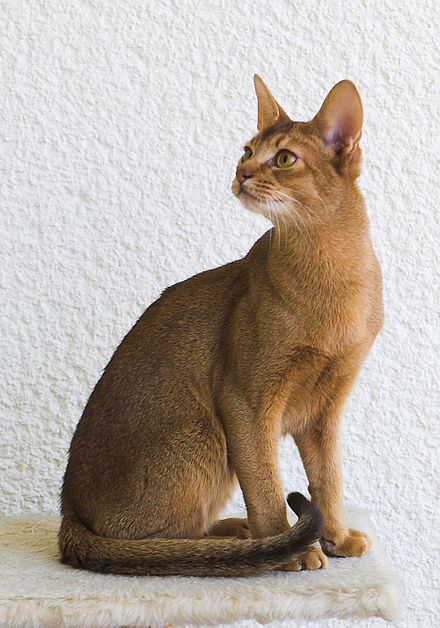

The Abyssinian /æbɪˈsɪniən/ is a breed of domestic short-haired cat with a distinctive "ticked" tabby coat, in which individual hairs are banded with different colors. They are also known simply as Abys. The breed is named for Abyssinia (now called Ethiopia), where it is believed to have originated.
In terms of the domestication of cats, analysis has found the Abyssinian to be one of the oldest types of the animal in existence, with mummified cats in Egyptian tombs studied by archaeologists appearing similar to the modern breed's standards.[citation needed] Although regarded as comparatively obscure in the past as a breed compared to others, the Abyssinian currently ranks among the top five most popular breeds worldwide.
